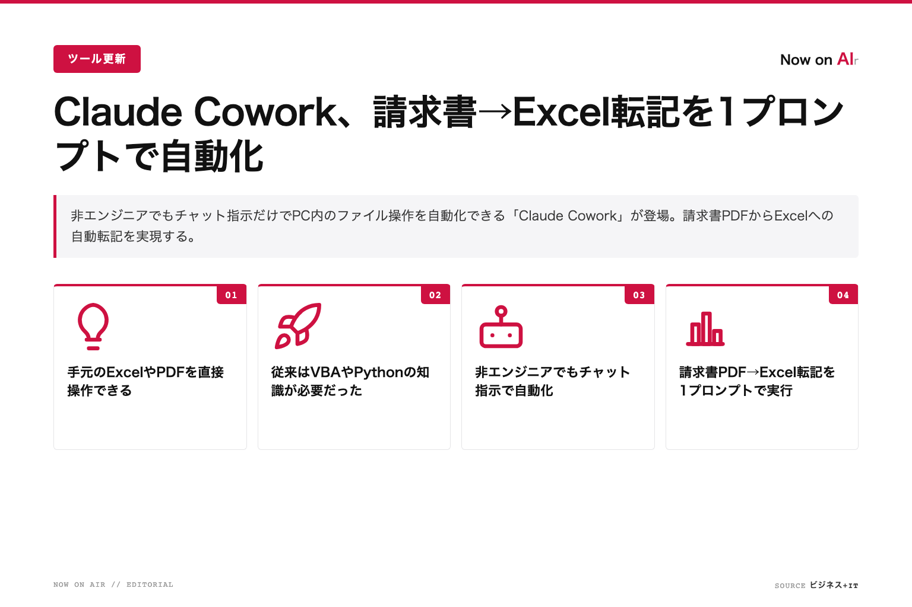
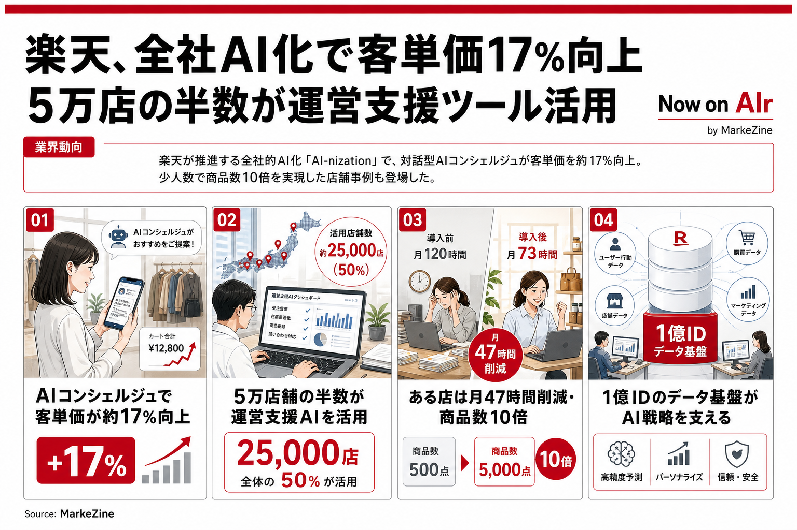
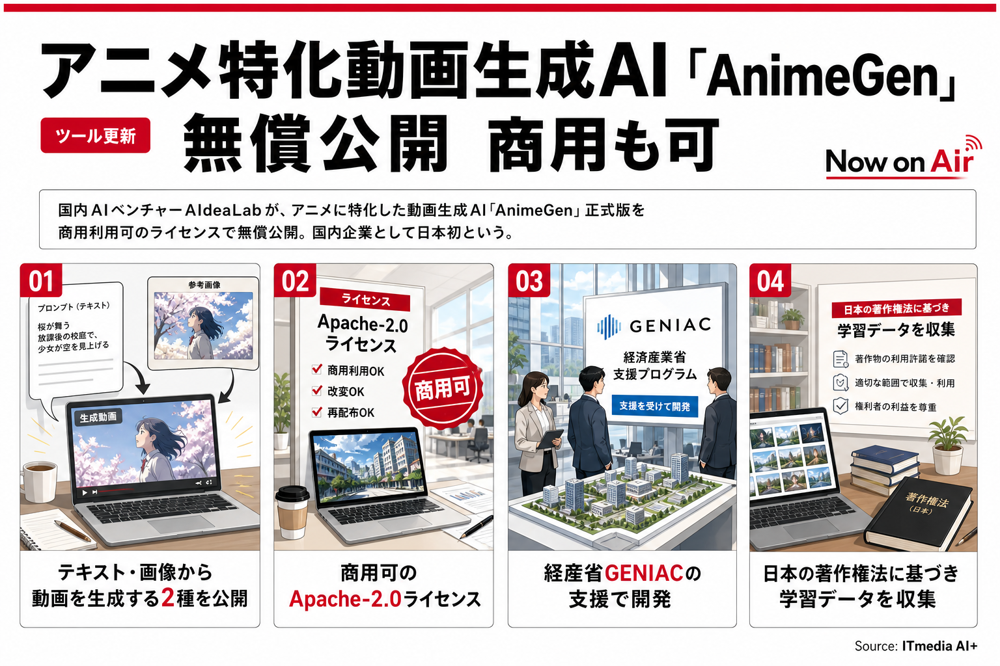

今週は「AIを使う」から「AIに実務を任せる」への移行が鮮明になった週。請求書転記や資料作成をチャット指示だけで自動化するツールが実用段階に入り、非エンジニアでも触れるようになった。楽天の客単価17%向上や月47時間削減の店舗事例が示す通り、少人数でも大企業並みの成果を出せる土台が整いつつある。今こそ定型作業の棚卸しと自動化が差を生む。

請求書PDFをExcelへ自動転記

AI活用で客単価17%増・時短

商用可の動画生成AIが無料公開
毎週月曜更新 · 個人事業主・社長のためのAI週報
← 毎日のAIニュースに戻る